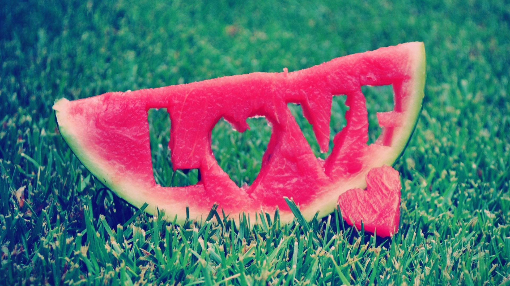

BACK
LOVE
Oxford Dictionary:
[MASS NOUN]
1. A strong feeling of affection
1.1. A strong feeling of affection and sexual attraction for someone
1.2. Affectionate greetings conveyed to someone on one’s behalf
1.3. A formula for ending an affectionate letter
2. A great interest and pleasure in something
3. [COUNT NOUN] A person or thing that one loves
3.1. (British informal) A friendly form of address
3.2. (a love) informal Used in affectionate requests
4. (In tennis, squash, and some other sports) a score of zero; nil
Dictionary.com: 1. A profoundly tender, passionate affection for another person.
2. A feeling of warm personal attachment or deep affection, as for a parent, child, or friend.
3. Sexual passion or desire.
4. A person toward whom love is felt; beloved person; sweetheart.
5. (used in direct address as a term of endearment, affection, or the like)
6. A love affair; an intensely amorous incident; amour.
7. Sexual intercourse; copulation.
8. (Initial capital letter) A personification of sexual affection, as Eros or Cupid.
9. Affectionate concern for the well-being of others
10. Strong predilection, enthusiasm, or liking for anything
11. The object or thing so liked
12. The benevolent affection of God for His creatures, or the reverent affection due from them to God.
13. Chiefly Tennis: a score of zero; nothing.
14. A word formerly used in communications to represent the letter L.
Urban Dictionary:
Nature’s way of tricking people into reproducing
PERSON 1: Mmm... um.... People...want... the feeling umm.. attraction... to... something.
PERSON 2: Comfort. But not, like, i dont know. It’s like, understanding and comfort. ... Takes a long time.
PERSON 3: Uhh brain chemistry.
PERSON 4: I think love is when.. whether its with a thing, a person, or idea, umm... when you feel very passionate and connected and as much a part of that... extension of yourself as you do as an individual and like without that extension of youself, there’s something incomplete in whole identity.


.jpg)